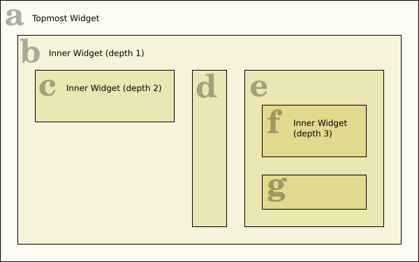
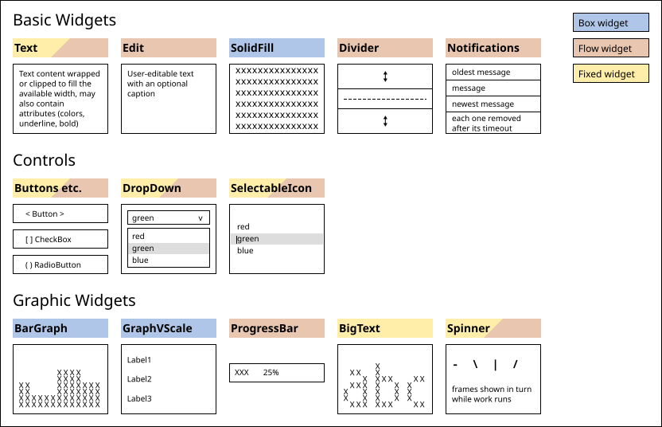
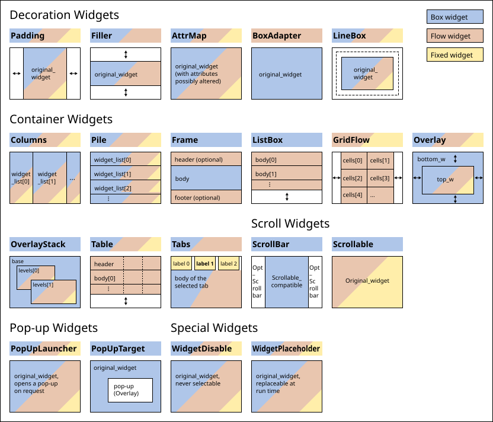

Widgets¶
Widget Layout¶
Urwid uses widgets to divide up the available screen space. This makes it easy to create a fluid interface that moves and changes with the user’s terminal and font size.

The result of rendering a widget is a canvas suitable for displaying on the screen. When we render the topmost widget:
The topmost widget (a) is rendered the full size of the screen
(a) renders (b) any size up to the full size of the screen
(b) renders (c), (d) and (e) dividing its available screen columns between them
(e) renders (f) and (g) dividing its available screen rows between them
(e) combines the canvases from (f) and (g) and returns them
(b) combines the canvases from (c), (d) and (e) and returns them
(a) possibly modifies the canvas from (b) and returns it
Widgets (a), (b) and (e) are called container widgets because they contain other widgets. Container widgets choose the size and position of their contained widgets.
Container widgets must also keep track of which one of their contained widgets is in focus. The focus is used when handling keyboard input. If in the above example (b) ‘s focus widget is (e) and (e) ‘s focus widget is (f) then keyboard input will be handled this way:
The keypress is passed to the topmost widget (a)
(a) passes the keypress to (b)
(b) passes the keypress to (e), its focus widget
(e) passes the keypress to (f), its focus widget
(f) either handles the keypress or returns it
(e) has an opportunity to handle the keypress if it was returned from (f)
(b) has an opportunity to handle the keypress if it was returned from (e)
(a) has an opportunity to handle the keypress if it was returned from (b)
Box, Flow and Fixed Widgets¶
The size of a widget is measured in screen columns and rows. Widgets that are given an exact number of screen columns and rows are called box widgets. The topmost widget is always a box widget.
Much of the information displayed in a console user interface is text and the best way to display text is to have it flow from one screen row to the next. Widgets like this that require a variable number of screen rows are called flow widgets. Flow widgets are given a number of screen columns and can calculate how many screen rows they need.
Occasionally it is also useful to have a widget that knows how many screen columns and rows it requires, regardless of the space available. This is called a fixed widget.
sizing mode |
width |
height |
|---|---|---|
|
container decides |
container decides |
|
container decides |
widget’s |
|
widget’s |
widget’s |
It is an Urwid convention to use the variables maxcol and
maxrow to store a widget’s size. Box widgets require both of (maxcol,
maxrow) to be specified.
Flow widgets expect a single-element tuple (maxcol,) instead because they
calculate their maxrow based on the maxcol value.
Fixed widgets expect the value () to be passed in to functions that take
a size because they know their maxcol and maxrow values.
A widget may support more than one sizing mode, and Widget.sizing()
returns the set of modes it supports. The sizing modes of a decoration or
container widget depend on the widgets it contains and on its options.
A widget can also accept a size it does not report. A ListBox
renders at a flow size, but reports 'flow' only with flow=True; see
ListBox Contents. A Frame renders at a flow size when its body
does, and reports 'flow' only with flow=True as well. See
shrink_to_fit for a dialog that takes the rows of its
content.
widget |
sizing modes |
|---|---|
|
|
|
|
|
|
|
|
|
the modes of the wrapped widget |
the modes of the wrapped widget, and |
|
|
|
|
|
depend on the widgets they contain and their options |
|
|
|
|
|
|
|
|
|
|
|
|
|
|
|
|
Included Widgets¶

Basic widgets, controls and graphic widgets are the content with which users
interact. They may also be used as part of custom widgets you create.
Controls are the widgets a user operates to make a choice: Button,
CheckBox, RadioButton and DropDown.
The graphic widgets also include Terminal, a box widget that runs a
child process and shows its terminal output.
The color of a widget’s title in the figures shows the sizing modes it
supports: blue for box, orange for flow and yellow for fixed. A title in more
than one color supports each of those modes. A mode a widget supports only
with some options is drawn the same way, such as 'flow' for
ListBox(..., flow=True). In a decoration or container tile, the colors
inside the box show which sizing modes the wrapped widgets use. The table in
Box, Flow and Fixed Widgets lists the exact sizing modes of each widget and
the conditions for each mode.

Controls¶
Button, CheckBox and RadioButton send a signal
when the user activates them with enter, space or a mouse
click: 'click' for a button and 'change' for a check box or a radio
button. GridFlow arranges a group of them in equal-width cells.
The selected_button property of a RadioButton returns the selected
button of its group, or None when no button of the group is selected.
A Button shows its label between < and >. The left and
right keywords replace a bracket with other markup, such as "[", and
markup with no text, such as "", leaves the bracket out, so
Button(label, left="", right="") is clickable plain text. The cursor
rests on the first character of the label while the button is in focus;
cursor_position=None hides it, as it does for a SelectableIcon.
SelectableIcon Widgets¶
SelectableIcon is a Text widget that takes the focus and
shows the cursor at a fixed position in its text while it is in focus:
cursor_position, the first character by default. It is the part of
Button, CheckBox and RadioButton that takes the
focus, and it can be used on its own as a row of a menu or of a
ListBox that the user chooses by moving the focus to it:
rows = [
urwid.AttrMap(urwid.SelectableIcon(name), None, focus_map="reversed")
for name in ("red", "green", "blue")
]
listbox = urwid.ListBox(urwid.SimpleFocusListWalker(rows))
It handles no keys and no mouse events: it returns every key, so the
container or the application acts on enter. cursor_position=None
shows no cursor, which makes it the same as Text(markup, selectable=True);
see ListBox Focus and Scrolling.
DropDown Widgets¶
DropDown shows the selected option of a list of options, followed by
an indicator. enter, space or a mouse click opens a pop-up list
of all the options with the selected one in focus. Activating an option in
the list selects it and closes the list, and esc closes the list
without a change. The list opens below the widget, or above it when it does
not fit below, and it shows at most max_visible_items options at once and
scrolls through the rest. A drop-down with a single option has nothing to
choose, so it is read-only: it is not selectable, opens no list, and leaves
the key or the click to the widgets above it.
The DropDown.selected property holds the index of the selected
option, and DropDown.options holds the markup of every option.
The 'change' signal is sent with the new index before
DropDown.selected changes, so a callback still reads the previous
value from the widget:
def on_change(drop_down: urwid.DropDown, new_index: int) -> None:
status.set_text(["Selected: ", drop_down.options[new_index]])
drop_down = urwid.DropDown(["Red", "Green", "Blue"], selected=1)
urwid.connect_signal(drop_down, "change", on_change)
The list is a pop-up, so DropDown needs a PopUpTarget;
see DropDown for the requirement.
The tour.py example program shows two drop-down widgets.
Edit Widgets¶
Edit handles the readline editing commands described in
CommandMap: moving and deleting by word and to the line ends. No key
is mapped to them by default. CommandMap.bind_readline() maps the usual
readline keys, such as ctrl a, ctrl e, ctrl w and
meta b, either on the shared urwid.command_map or on a copy that a
subclass sets as its _command_map:
class ReadlineEdit(urwid.Edit):
_command_map = urwid.command_map.copy()
_command_map.bind_readline()
An Edit created with undo_limit keeps that many changes made by
keys, which the 'undo' and 'redo' commands take back and make again;
CommandMap.bind_readline() maps ctrl _ to 'undo'. Setting
the text from the application clears this history, so that a reused edit does
not bring back an earlier value. An Edit given a kill_buffer
list puts the text the word and line delete commands remove into it, and the 'yank'
command (ctrl y in the preset) inserts the newest entry; several edits
can share one list.
The tour.py example program shows such an edit.
Decoration Widgets¶
Decoration widgets alter the appearance or position of a single other widget.
The widget they wrap is available as the
original_widget property.
If you might be using more than one decoration widget you may use the
base_widget property to access the
“most” original_widget.
Widget.base_widget points to self on all non-decoration widgets, so
it is safe to use in any situation.
Pop-up Widgets¶
A pop-up is a widget drawn on top of the other widgets on the screen, such as
a menu or the list of a DropDown. Two decoration widgets work
together to show it:
PopUpLauncherwraps the widget that opens the pop-up. A subclass implementsPopUpLauncher.create_pop_up(), which returns the pop-up widget, andPopUpLauncher.get_pop_up_parameters(), which returns its position relative to the launcher and its size. CallingPopUpLauncher.open_pop_up()andPopUpLauncher.close_pop_up()opens and closes it, andPopUpLauncher(..., close_on_menu=True)also closes it when the pop-up leaves esc unhandled.PopUpLauncher(..., close_on_click_outside=True)closes it on a mouse click outside the pop-up; that click does not reach the widget under it.PopUpLauncher.pop_up_widgetis the open pop-up, andPopUpLauncher.launcher_sizethe size the launcher was last rendered at, whichPopUpLauncher.get_pop_up_parameters()can place the pop-up against.PopUpTargetis a box widget that draws the open pop-up of a launcher inside it, and any pop-up opened from that pop-up, as anOverlayover its own content. A pop-up is shown only inside aPopUpTarget.MainLoop(..., pop_ups=True)wraps the topmost widget in one, so a pop-up can use the whole screen.
A pop-up that would extend past an edge of the PopUpTarget is moved,
and shrunk when it is larger, to fit inside it. When the parameters include
anchor_height, the number of launcher rows directly above the pop-up, the
pop-up is kept off those rows: it is placed below the launcher when it fits
there, above the launcher when it fits there, and otherwise on the side with
more rows, with its height clipped to that side. A pop-up widget may itself be
a PopUpLauncher with its own pop-up open; that pop-up is placed
relative to the pop-up that opened it.
The calc.py example program has a Theme button that opens a pop-up, and
DropDown (see Controls) is a PopUpLauncher whose
pop-up is its list of options.
Special Widgets¶
These decoration widgets change how the widget they wrap takes part in the interface, not how it looks:
WidgetDisabledisables interaction with the wrapped widget: while itsdisabledproperty isTrue(the default), it is never selectable, it is skipped by focus navigation, and it always renders the wrapped widget without focus. Setting the property toFalseenables the wrapped widget again without replacing the decoration; a disabled look, such as anAttrMaparound it, is up to the application.WidgetPlaceholdershows the widget stored in itsoriginal_widgetproperty, and assigning a new widget to that property replaces the widget shown without modifying the container that holds the placeholder. It is useful for an interface with several pages, or for showing and hiding a menu or a status bar.
Container Widgets¶
Container widgets divide their available space between their child widgets. This is how widget layouts are defined. When handling selectable widgets container widgets also keep track of which of their child widgets is in focus. Container widgets may be nested, so the actual widget in focus may be many levels below the topmost widget.
Urwid’s container widgets have a common API you can use, regardless of the container type. Backwards compatibility is still maintained for the old container-specific ways of accessing and modifying contents, but this API is now the preferred way of modifying and traversing containers.
container.focus
is a read-only property that returns the widget in focus for this container.
Empty containers and non-container widgets (that inherit from Widget)
return None.
container.focus_position
is a read/write property that provides access to the position of the
container’s widget in focus. This will often be an integer value but may be
any object.
Columns, Pile, GridFlow, Overlay and
ListBox with a SimpleListWalker or SimpleFocusListWalker
as its body use integer positions. Frame uses 'body', 'header'
and 'footer'; ListBox with a custom list walker will use the
positions the list walker returns.
Reading this value on an empty container or on any non-container widgets
(that inherit from Widget) raises an IndexError. Writing to this property with
an invalid position will also raise an IndexError. Writing a new value
automatically marks this widget to be redrawn and will be reflected in
container.focus.
container.contents
is a read-only property (read/write in some cases) that provides access to a
mapping- or list-like object that contains the child widgets and the options
used for displaying those widgets in this container. The mapping- or list-like
object always allows reading from positions with the usual __getitem__()
method and may support assignment and deletion with __setitem__() and
__delitem__() methods. The values are (child widget, option) tuples.
When this object or its contents are modified the widget is automatically
flagged to be redrawn.
Columns, Pile and GridFlow allow assigning an
iterable to container.contents to overwrite the values in
with the ones provided.
Columns, Pile, GridFlow and Frame support
container.contents item assignment and deletion. Overlay supports
item assignment only, because its two items are fixed.
container.options(...)
is a method that returns options objects for use in items added to
container.contents. The arguments are specific to the container type,
and generally match the __init__() arguments for the container.
The objects returned are currently tuples of strings and integers or None
for containers without child widget options. This method exists to allow
future versions of Urwid to add new options to existing containers. Code
that expects the option tuples to remain the same size will fail when new
options are added, so defensive programming with options tuples is strongly
encouraged.
container.__getitem__(x)
# a.k.a.
container[x]
is a short-cut method behaving identically to:
container.contents[x][0].base_widget.
Which means roughly “give me the child widget at position x and skip all
the decoration widgets wrapping it”. Decoration widgets include
Padding, Filler, AttrMap etc.
container.get_focus_path()
is a method that returns the focus position for this container and all child containers along the path defined by their focus settings. This list of positions is the closest thing we have to the singular widget-in-focus in other UI frameworks, because the ultimate widget in focus in Urwid depends on the focus setting of all its parent container widgets.
container.set_focus_path(p)
is a method that assigns to the focus_position property of each container
along the path given by the list of positions p. It may be used to restore
focus to a widget as returned by a previous call to container.get_focus_path().
container.get_focus_widgets()
is a method that returns the .focus values starting from this container
and proceeding along each child widget until reaching a leaf
(non-container) widget.
Note that the list does not contain the topmost container widget (i.e., on which this method is called), but does include the lowest leaf widget.
container.__iter__()
# typically
for x in container: ...
container.__reversed__()
# a.k.a
reversed(container)
are methods that allow iteration over the positions of this container.
Normally the order of the positions generated by __reversed__() will be the
opposite of __iter__(). The exception is the case of ListBox with
certain custom list walkers, and the reason goes back to the original way list
walker interface was defined. Note that a custom list walker might also generate
an unbounded number of positions, so care should be used with this interface and
ListBox.
Moving the Focus with Tab¶
The default command map binds tab and ctrl n to the
'next selectable' command and shift tab and ctrl p to the
'prev selectable' command. Pile, Columns,
Frame, ListBox and GridFlow handle these commands
only when they are created with select_navigation=True (or have their
select_navigation attribute set). Otherwise the keys are returned
unhandled, so an application that handles tab in its
unhandled_input keeps working.
An opted-in container handles 'next selectable' this way, and
'prev selectable' the same way in the opposite direction:
The key goes to the child in focus first, like every other key. A child that handles it keeps it: an
Editcreated withallow_tab=Trueinserts a tab, anEditwith atext_completercompletes its text when the completer returns something, and an opted-in child container moves its own focus.When the child returns the key unhandled, the container moves its focus to the next selectable child and enters it (see below). The following key presses go to that child until it returns the key unhandled again.
When there is no selectable child after the focus, the container moves its focus back to its first selectable child, enters it, and returns the key unhandled. An opted-in parent then moves on to its own next child. At the outermost opted-in container the same key press has already put the focus on its first selectable child, and the key still reaches
unhandled_input, which an application may use or ignore.
Each key press is decided from the answer of the child in focus and from the current contents and focus of the container, so children added, removed or changed between key presses are taken into account.
Entering a child means calling its enter_selectable(reverse=...) method,
when it has one. An opted-in container starts at its first selectable child
(its last one, for 'prev selectable') and enters that child in turn.
A container that is not opted in keeps its focus and is a single stop, the
same as a widget without the method, such as a ListBox of records.
Decoration widgets such as Padding, AttrMap and
LineBox, and WidgetWrap subclasses, forward the method to
the widget they send keys to; a subclass that sends keys to another widget
overrides enter_selectable() to match. WidgetDisable is never
entered while it is disabled. PopUpTarget does not forward the method and keeps every
focus under it, because the widget that receives its keys is known only
after the pop-ups were laid out at the current size.
After a step or a reset, every opted-in container on the new focus path, reached through containers and decorations that implement the method, is at its first (last) selectable child. Containers off the new focus path keep their focus until they are entered.
container.focus_first_selectable() and
container.focus_last_selectable() move the focus to the first or last
selectable child and enter it, whether or not the container is opted in.
They return whether a selectable child exists. ListBox searches its
whole body, not only the visible rows.
A child of Pile, Columns or GridFlow sized
(GIVEN, 0) is not drawn, so neither these commands nor the arrow keys
move the focus to it. A container whose only selectable children are sized
this way still reports itself as selectable to its parent.
Every focus change made by this navigation is an assignment to
container.focus_position, so a subclass that overrides the
focus_position setter sees each one. ListBox places the new
focus like any undirected focus change: a visible widget stays where it is,
and a widget out of view is centred.
A custom container gets the same behaviour from SelectNavigationMixin,
or from SelectNavigationListContentsMixin when its positions are
indexes into a contents list; the mixin documentation lists what the
container has to provide.
select_navigation=True on a ListBox expects a finite body:
get_next() and get_prev() of its list walker reach
(None, None) in both directions. A body without an end never returns
from the search. A list walker created with
wrap_around=True, such as SimpleFocusListWalker, is traversed
from the first to the last position of its positions(), so the key is
returned at its end. Another list walker that repeats a position is treated
as ending where the walk comes back to the focus: the search does not loop,
but the key is returned only when no other selectable widget is left.
Reacting to Focus Changes¶
Pile, Columns, GridFlow and Tabs send the
"focus changed" signal after their focus position changed: by a key, a
mouse click, the focus_position setter, or a change of contents that
moves the focus to another position. Replacing the widget in focus at the
same position is not reported. A handler receives the container, the old and
the new position; a position is None while the container is empty. The
handler runs after the change, so the container already reports the new
focus:
def on_focus_changed(pile, old_position, new_position):
status.set_text(f"field {new_position}")
urwid.connect_signal(pile, "focus changed", on_focus_changed)
The signal is sent once for a change of contents, after the contents
list’s modified callback. Replacing the callback set with
contents.set_focus_changed_callback(), which runs before the change, does
not stop the signal.
Frame sends the same signal after its focus part changed: by a key
with select_navigation, a mouse click, the focus_position or
focus_part setter, or the removal of the header or the footer in focus,
which moves the focus to the body. Its positions are 'header',
'body' and 'footer', never None. Replacing the widget of the part
in focus is not reported.
The positions of Tabs are tab indexes. Deleting the selected tab
when another tab follows it keeps the index, so the next tab becomes selected
without a signal. Moving the bar cursor is not reported either: it does not
select a tab.
A handler that moves the focus again sends a new signal before the remaining
handlers of the first one run, so those see the second change first. The
arguments of each signal, not the current focus_position, describe the
change it reports.
A focus child is drawn with its focus attributes only while its container is
in focus. To keep it marked when the focus moves to another part of the
screen, give Pile, Columns, ListBox or
GridFlow an unfocused_focus_attr: while the container renders
without focus, it applies that attribute map to the focus child’s canvas, in
any form AttrMap takes. Tabs applies it to the label of the
selected tab, not to the body:
listbox = urwid.ListBox(walker, unfocused_focus_attr={"item": "item selected"})
When the children carry their own AttrMap focus maps, a fixed map
cannot follow each child’s own look. unfocused_focus_attr_func takes a
function instead: it is called with the focus child (the selected label of a
Tabs, the TableRow of a Table) and returns a map in
any form AttrMap takes, or None to fall back to
unfocused_focus_attr. It runs when the container’s canvas is drawn
afresh, so a result that depends on state outside the widgets needs the
container invalidated before it shows:
def own_focus_map(child):
if not isinstance(child, urwid.AttrMap) or child.focus_map is None:
return None
return {child.attr_map.get(key, key): value for key, value in child.focus_map.items()}
pile = urwid.Pile(cells, unfocused_focus_attr_func=own_focus_map)
focus_map is None for an AttrMap without one, and an
attribute the normal map does not name passes through unchanged. The mark is
applied to the attributes the normal map has already produced, so it
reproduces the focused look only while the normal map keeps apart the
attributes the focus map tells apart: with attr_map={"a": "plain", "b":
"plain"} and focus_map={"a": "one", "b": "two"} both parts are marked
"two".
Pile Widgets¶
Pile widgets are used to combine multiple widgets by stacking them vertically.
A Pile can manage selectable widgets by keeping track
of which widget is in focus and it can handle moving the focus between widgets
when the user presses the UP and DOWN keys.
A Pile will also work well when used within a ListBox.
A Pile is selectable only if its focus widget is selectable. If you create a Pile containing one Text widget and one Edit widget the Pile will choose the Edit widget as its default focus widget.
Columns Widgets¶
Columns widgets may be used to arrange either flow widgets,
box widgets or fixed widgets horizontally into columns.
Columns widgets will manage selectable widgets by keeping track of which column is in focus and it can
handle moving the focus between columns when the user presses the LEFT and RIGHT keys.
Columns widgets also work well when used within a ListBox.
Columns widgets are selectable only if the column in focus is selectable. If a focus column is not specified the first selectable widget will be chosen as the focus column.
The keys move the focus only to columns that are drawn. A column 0 columns wide, or one left out because the columns do not fit the width, is skipped, since the user cannot see it. A Columns wider than the screen therefore does not scroll to its hidden columns when the focus moves; it shows them again once it is wide enough.
GridFlow Widgets¶
The GridFlow widget is a fixed/flow widget designed for use
with Button, CheckBox and RadioButton widgets.
It renders all the widgets it contains the same width
and it arranges them from left to right and top to bottom.
The GridFlow widget uses Pile, Columns, Padding and Divider widgets to build a display widget that will handle the keyboard input and rendering. When the GridFlow widget is resized it regenerates the display widget to accommodate the new space.
Table Widgets¶
Table lines up rows of cells between a header and an optional
footer that stay in place while the rows scroll. Each TableColumn gives its column a width:
PACK for the widest cell, a number of screen columns, or
(WEIGHT, weight) for a share of the room the other columns leave:
table = urwid.Table(
[
urwid.TableColumn("Name"),
urwid.TableColumn("Size", align=urwid.RIGHT),
urwid.TableColumn("Note", width=(urwid.WEIGHT, 1), wrap=urwid.ELLIPSIS),
],
[["urwid", "1.2M", "console user interface library"]],
focus_attr="row focus",
unfocused_focus_attr="row marked",
)
table.body.append(["tour.py", "18K", "the example program"])
A cell is a widget or text markup. Markup becomes a text cell with the
column’s align and wrap; a widget keeps its own, so pass an aligned
widget where that matters. A cell has to support 'flow' sizing. Only a
cell that also supports 'fixed' sizing is measured for a PACK column,
so an Edit column is best given a number or a weight.
Table.body holds the rows. A sequence of cells added to it becomes a
TableRow, which carries a data object for the caller, its own
attr and focus_attr, and whether it is selectable. Every row is
selectable unless built otherwise, so a row of plain text takes the focus.
A change that does not fit the columns raises TableError and leaves the
rows as they were.
A column’s attr maps every cell of that column in the rows.
It does not map the header label, which takes header_attr only,
nor a footer built from cells, which takes footer_attr only,
and it does not map a span row.
The row’s map applies over it: a dict attr or focus_attr of the row
also maps the column attributes, so a dict focus_attr gives each column
its own focus colour.
When the columns do not fit, the weighted columns are at their minimum
first, then the PACK columns shrink towards their min_width, and as the
last resort the rightmost column is hidden. A given width never shrinks.
A hidden column is skipped by the keyboard.
Cells are measured once, when their row is built. A text cell the table
made measures itself again when its text changes. A widget passed as a cell
whose width changes later needs TableLayout.invalidate_widths().
The table sends "focus changed" like the other containers, and
"activate" with the focus position when the focused row leaves the
activate command (enter or space) unhandled. A handler
whose result is true consumes the key; otherwise the key is returned, as
Overlay does for "menu". Every handler runs, whatever the earlier
ones returned. A mouse click moves the focus and reaches the cell, as in a
ListBox. A row_attr(index, data) callable colours rows by their
position or their data, for example in stripes; it runs each time a row is
drawn. The unfocused_focus_attr map is applied over the row’s own map, so
its keys are the attributes the row’s map produces.
footer= takes the cells of a row drawn below the rows, such as totals.
Table.footer can be set later to cells, to a TableRow of
Table.layout with its own maps (a span row for a one-line summary),
or to None. Like the header, the footer shares the column widths and
never takes the focus or a mouse click.
A box size that does not fit the whole table can drop the header or the
footer: header_drop=N drops the header while keeping it would leave the
body fewer than N rows, and footer_drop does the same for the footer.
The part with the larger threshold is dropped first, so the two numbers also
set which part matters more; on equal thresholds the footer goes first.
Nothing is dropped while all the rows fit, and a flow size shows both parts.
In a flow size, max_rows limits the rows shown, and Table.pack(())
gives the natural width, so a table can size a dialog by itself.
Table.set_focus() takes coming_from= as ListBox.set_focus()
does, so a jump scrolls as if the focus arrived from that edge.
wheel="view" makes the mouse wheel scroll the rows instead of moving the
focus, as for a ListBox; see ListBox Focus and Scrolling.
scrollbar=True draws a ScrollBar beside the rows, and
scrollbar=None draws it only when the rows do not fit.
The ScrollBar parameters for its look, its side and its mouse
handling are passed with a scrollbar_ prefix, such as
scrollbar_thumb_char, scrollbar_end_markers, scrollbar_side and
scrollbar_attr, so a table’s scrollbar can look like the other scrollbars
of an application.
urwid.widget.TableLayout, the part that shares the widths, also
works without a table: rows built with TableLayout.row() line up in a
Pile or a ListBox of their own, such as the label and value
columns of a form.
Tabs Widgets¶
Tabs shows a row of tab labels over the body of the selected tab.
It is built from (label, body) pairs, and the label is text markup or a
widget:
tabs = urwid.Tabs(
[
("Log", urwid.Text("12:00 started")),
("Settings", urwid.Edit("Name: ", "demo")),
("Help", urwid.Text("F1 for help")),
],
selected=1,
selected_map="tab selected",
)
which renders 24 columns wide as:
Log Settings Help
Name: demo
The selected tab is the focus of the container: focus_position is its
index and focus its body. Keys go to the body, and a mouse click on a
label selects its tab. The 'next tab' and 'previous tab' commands
select the neighbour and wrap around at the ends. No key is mapped to them
by default, since tab already moves the focus between widgets in many
applications; bind them to the keys the application uses:
from urwid.command_map import Command
urwid.command_map.bind(Command.NEXT_TAB, "meta right")
urwid.command_map.bind(Command.PREVIOUS_TAB, "meta left")
With two or more tabs the widget is selectable, so a parent container passes it these commands even when no body takes keys.
With bar_selectable=True the label row can take the keyboard focus:
up, when the body leaves it unhandled, moves the focus to the bar,
left and right move a bar cursor there, enter selects
the tab under it and down returns to the body. With a single tab there
is nothing to switch to, so the bar never takes the focus and the tab
commands are returned to the widgets above. bar_position="bottom" draws
the bar under the body, and the up and down keys swap their roles. When the
labels do not fit, the bar centres the selected label, or the label under the
bar cursor while the bar has the focus. An edge with labels hidden past it
shows < or >, and a click on it selects the nearest hidden tab on that
side. With five tabs in 12 columns, the first and then the third selected:
one two thr>
<wo three f>
The overflow_markers argument sets the markers, from
Tabs.Symbols or any text:
tabs = urwid.Tabs(
pages,
overflow_markers=(urwid.Tabs.Symbols.ARROW_TRIANGLE_LEFT, urwid.Tabs.Symbols.ARROW_TRIANGLE_RIGHT),
)
None draws no markers, and an empty string leaves that edge without one.
attr_map applies to every label, selected_map to the selected one and
focus_map to the label under the bar cursor.
Labels on a colored background read as a row of buttons. The underline
argument instead draws a line row between the labels and the body: its first
glyph across the width and its second one along the selected label, which
joins that label to its body. The line takes attr_map, and its part along
the selected label selected_map, so a palette can leave the labels without
a background:
tabs = urwid.Tabs(
pages,
underline=(urwid.Tabs.Symbols.LINE_LIGHT, urwid.Tabs.Symbols.LINE_HEAVY),
attr_map="tab",
selected_map="tab selected",
)
which renders the second of three tabs 17 columns wide as:
Log Settings Help
────━━━━━━━━─────
Name: demo
LINE_ASCII and LINE_ASCII_DOUBLE are also drawn on terminals without
UTF-8. bar_position="bottom" puts the line above the labels. A click on
the line acts as a click on the label row next to it, including on an overflow
marker.
Tabs.contents holds (body, label) pairs, body first as in the
other containers; Tabs.options() turns markup into a label widget:
tabs.contents.append((urwid.Text("new body"), urwid.Tabs.options("New")))
del tabs.contents[0]
Removing the selected tab selects the next one, or the previous one when it
was the last. The "focus changed" signal reports the index, see
Reacting to Focus Changes, so an application that shows the selected tab
somewhere else also updates that display after its own changes of
contents. examples/calc.py uses the signal to move the number shown
to the calculator of the selected tab.
Notifications Widgets¶
Notifications lists messages that disappear after a timeout, the
oldest at the top. It is a flow widget, usually the footer of a
Frame, and takes no rows while it is empty and has no default
text:
notifications = urwid.Notifications(
severity_attr={urwid.Severity.WARNING: "warning", urwid.Severity.ERROR: "error"},
)
frame = urwid.Frame(body, footer=notifications)
notifications.notify("saved")
notifications.notify("disk almost full", severity=urwid.Severity.WARNING, timeout=None)
A message stays for timeout seconds, 5 unless the widget or the
notify() call says otherwise, and timeout=None keeps
it until dismiss() or clear() takes
it down. max_count=1 turns the list into a status line, where each new
message replaces the last one, and default is the text shown while no
message is showing:
status = urwid.Notifications(max_count=1, default="q: quit")
The alarm that dismisses a message is set on the loop given to the
widget, or else on the loop running when notify() is
called (see get_running_loop()); a message with a timeout posted before
the loop runs needs loop=. Call the widget from the thread running the
loop only. Another thread hands its message over with
MainLoop.call_from_thread().
examples/notifications.py shows the widget as a footer.
Spinner Widgets¶
Spinner is a Text widget that shows its frames in turn
while some work runs, for work without a known total, where a
ProgressBar has nothing to show. It shows only the frame, so a
label goes into its own Text next to it:
spinner = urwid.Spinner(urwid.Spinner.Frames.BRAILLE)
row = urwid.Columns([(urwid.PACK, spinner), urwid.Text("loading")], dividechars=1)
spinner.start() # when the work begins
spinner.stop() # when it ends, on every path
start() sets an alarm that shows the next frame every
interval seconds, on the loop given to the widget or else on the loop
running when start() is called (see
get_running_loop()). The frame is
chosen from the time elapsed since the start, so a late alarm skips frames
instead of slowing the spinner down. stop() removes the alarm
and shows the idle text, by default spaces as wide as a frame, so a
PACK cell keeps its width. Stop a spinner that leaves the screen: the
pending alarm keeps it alive. An application with its own tick calls
step() instead, which needs no loop. Call the widget from the
thread running the loop only; another thread hands the call over with
MainLoop.call_from_thread(). examples/spinner.py shows every preset
of Spinner.Frames.
Overlay Widgets¶
The Overlay widget is a box/flow/fixed widget that contains two other widgets.
The bottom widget is BOX rendered the full size of the Overlay widget
and the top widget is placed on top, obscuring an area of the bottom widget.
Widget sizing depends on the top widget sizing and sizing options.
This widget can be used to create effects such as overlapping “windows” or pop-up menus.
The Overlay widget always treats the top widget as the one in focus.
All keyboard input will be passed to the top widget.
When the top widget leaves a key for the menu command (esc by default) unhandled,
the Overlay sends its "menu" signal with itself as the argument.
A handler that returns True consumes the key, which makes it the place to close a dialog on esc.
A press of mouse button 1, 2 or 3 outside the top widget sends the "click outside" signal the same way,
and a handler that returns True consumes the press, for a dialog that closes on a click outside it.
If you want to use a flow widget for the bottom widget,
first wrap the flow widget with a Filler widget.
With a 'pack' height, a top widget taller than the rows available is clipped at the bottom.
With shrink_to_fit=True, a top widget that also supports 'box' is rendered as a box at those rows instead,
and Filler takes the same argument for its body.
A dialog around a Table, or around a Pile with a weighted ListBox(..., flow=True) item,
then takes the rows of its content, and scrolls the table or the list only when the screen is too short.
A Frame(..., flow=True) around such a list keeps its footer, such as a row of buttons, on a short screen:
with the body or the footer in focus, a Frame trims its header first.
trim_first='footer' trims the footer first instead while the body is in focus,
so a header, such as a path input above a list, keeps its rows longer than the footer does.
min_body_rows gives the body that many rows right after the part in focus,
so optional controls in a header or footer do not take the whole screen.
The body takes these rows before a header or a footer that is not in focus,
so a screen with no more rows than that shows neither of them;
see Frame.frame_top_bottom() for the order.
The top widget is measured in and out of focus on each layout.
The OverlayStack widget is a box widget for dialogs that open on top of each other.
It holds a base widget, usually the application’s Frame, and a stack of open dialogs,
each one an Overlay over the one below, and it is meant to be the MainLoop.widget.
OverlayStack.open() puts a widget on top with the Overlay layout options.
It takes shrink_to_fit as well, for a dialog taller than the screen.
Without a width or height, a flow or box widget gets 80% of the width,
a flow widget is packed to its rows, a box widget that is not a flow widget gets 80% of the height,
and a widget that is fixed only is packed in both directions.
OverlayStack.close() takes the top dialog down, or a given dialog and every dialog above it,
and passes a result to the dialog’s on_close callback and to the "closed" signal.
With close_on_menu or close_on_click_outside, a dialog also closes on a key for the menu command
(esc by default) it leaves unhandled, or on a press outside it, with the result None.
Both are defaults set on the stack that each open() call can override,
for example to keep the first dialog of an application open.
Call the stack from the thread running the loop only;
another thread hands the call over with MainLoop.call_from_thread().
examples/calc.py opens its help dialog in an OverlayStack.
Scrollable Widgets¶
Scrollable widgets can scroll long content which normally not fit into the screen resolution. Scrolling is normally supported using keyboard positioning keys and mouse wheel.
For scrolling is expected to be used ScrollBar which accept any BOX widget supporting scrollable api.
ScrollBar Widget¶
The ScrollBar widget draw optional scrollbar on the right or left side of widget if scrolling is required
(widget not fit in the desired amount of rows).
With visible=True the scrollbar is drawn even when no scrolling is required,
so the wrapped widget keeps the same width whatever its content.
With visible=False it is never drawn: the wrapped widget gets the full width and still scrolls by keys and wheel.
With end_markers, such as (ScrollBar.Symbols.ARROW_TRIANGLE_UP, ScrollBar.Symbols.ARROW_TRIANGLE_DOWN),
the first and the last scrollbar row hold markers
that scroll one step when clicked; a marker whose end of the content is visible is drawn with marker_dim_attr.
attr and thumb_attr set the display attributes of the bar and the thumb,
and focus_attr and thumb_focus_attr replace them when the scrollbar is rendered in focus.
The widget reports BOX sizing, and FLOW as well around a ListBox with ListBox.flow set,
also when the ListBox is wrapped in a decoration such as AttrMap.
The wrapped widget must support BOX.
Around a ListBox it also accepts a flow size: it then takes the rows of the list,
draws no scrollbar with visible=None, and fills the scrollbar with the thumb with visible=True.
In case of other widget types, they should be wrapped to support BOX sizing.
Scrollablemake any FLOW or FIXED widget compatible with scrollable api.ListBoxcan be used withScrollBardirectly, all input outside the scrollbar and the mouse wheel over it are handled byListBoxand it’s widgets. By default a click or drag on the scrollbar does nothing. Withscroll_by_focus=Truea click or drag on the scrollbar scrolls theListBoxby moving its focus to the widget at the top of the new view (at the end of the list the view may shift to fill the rows); the focus stays when the view does. It is off by default, because this focus change does not pass through theListBoxinput methods.ScrollBarandScrollablealways accept the input focus. Withdelegate_selectable=Truethey accept it only when the wrapped widget is selectable, so a container moves the focus past aListBoxcreated withfocus_when_empty=Falsewhile it is empty. It is off by default, because a wrapped widget that is not selectable then cannot be scrolled by keys.
Keyboard positioning keys and mouse wheel is used for scrolling if not handled by the wrapped widget. Scrolling is done on per-line basis.
Scrollable Widget¶
The Scrollable widget is used to make any FLOW or FIXED widget compatible with scrollable api by changing
target widget render and scrolling along full-size / columns defined sized widget.
Keyboard positioning keys and mouse wheel is used for scrolling if not handled by the wrapped widget.
Note
Scrollable do not recognize if selectable wrapped widget part visible or not
if wrapped widget do not draw cursor.
This means, keyboard input maybe forwarded to the wrapped selectable widget even if it not visible.
Mouse input is not affected by this limitation due to known column and raw of mouse event.
Comparing to the ListBox,
Scrollable handles fixed and flow widgets directly instead of using list of small widgets.
ListBox should be used to scroll between widgets, which can be multiline by itself.
Scrollable API¶
Widget pretending to be scrolled via ScrollBar should subclass Widget
and implement positioning API:
- Scrollable.get_scrollpos(size=None, focus=False)¶
Get scrolling position
- Parameters:
size (tuple[int, int] | None) – widget render size. If size is not given, the currently rendered number of rows is returned.
focus (bool) – widget is focused
- Returns:
the index of the first visible row.
- Return type:
int
- Scrollable.set_scrollpos(position: SupportsInt)¶
Optional method for setting scrolling position.
Method is called on mouse wheel scroll if it implemented and mouse event was not handled by widget.
ScrollBardoes not callListBox.set_scrollpos(), so aListBoxkeeps scrolling by its focus there; a subclass that defines its own method is called.If position is positive it is interpreted as lines from the top. If position is negative it is interpreted as lines from the bottom.
- Scrollable.rows_max(size=None, focus=False)¶
Get the total number of rows widget can render.
- Parameters:
size (tuple[int, int] | None) – widget render size. If size is not given, the currently rendered number of rows is returned.
focus (bool) – widget is focused
- Returns:
the number of rows for size
- Return type:
int
ListBox Contents¶
ListBox is a box widget that contains flow widgets.
Its contents are displayed stacked vertically, and the
ListBox allows the user to scroll through its content.
One of the flow widgets displayed in the ListBox is its
focus widget.
A ListBox also accepts a flow size.
At a flow size it shows all its widgets, and ListBox.rows() returns the rows they take.
The whole body is measured, so this is meant for lists short enough for a dialog.
It needs a list walker that reports its length or an estimate of it, or a TreeWalker,
and that does not wrap around.
By default a ListBox reports BOX sizing only, so containers lay it out as a box widget.
With flow=True it reports FLOW as well, over a list walker that reports its length or an estimate of it
and does not wrap around; a TreeWalker qualifies only when it reports its length.
A container can then give it the rows of all its widgets:
A weighted
ListBox(..., flow=True)item of aPiletakes the rows of its widgets when the Pile is rendered at a flow size, and the rows left over when it is rendered at a box size. An item with a'pack'height is rendered at a flow size, so it shows every widget and does not scroll.In a
Columnsit is a flow widget like aText, so a Columns of it and of columns that are flow widgets only is a flow widget too.BoxAdapterremains the way to give aListBoxa fixed number of rows.
See shrink_to_fit for a dialog that shrinks to the screen and scrolls its list.
ListBox Focus and Scrolling¶
The ListBox is a box widget that contains flow widgets,
and a flow widget as well with flow=True (see ListBox Contents).
Its contents are displayed stacked vertically, and the
ListBox allows the user to scroll through its content.
One of the flow widgets displayed in the ListBox is the
focus widget. The ListBox passes key presses to the
focus widget to allow the user to interact with it. If the focus widget does
not handle a keypress then the ListBox may handle the
keypress by scrolling and/or selecting another widget to become the focus
widget.
The ListBox tries to do the most sensible thing when
scrolling and changing focus. When the widgets displayed are all
Text widgets or other unselectable widgets then the
ListBox will behave like a web browser does when the
user presses UP, DOWN, PAGE UP and PAGE DOWN: new text is immediately
scrolled in from the top or bottom. The ListBox chooses
one of the visible widgets as its focus widget when scrolling. When scrolling
up the ListBox chooses the topmost widget as the focus,
and when scrolling down the ListBox chooses the
bottommost widget as the focus.
The ListBox remembers the location of the widget in
focus as either an “offset” or an “inset”. An offset is the number of rows
between the top of the ListBox and the beginning of the
focus widget. An offset of zero corresponds to a widget with its top aligned
with the top of the ListBox. An inset is the fraction
of rows of the focus widget that are “above” the top of the
ListBox and not visible. The
ListBox uses this method of remembering the focus
widget location so that when the ListBox is resized the
text displayed will stay roughly aligned with the top of the
ListBox.
When there are selectable widgets in the ListBox the
focus will move between the selectable widgets, skipping the unselectable
widgets. The ListBox will try to scroll all the rows of
a selectable widget into view so that the user can see the new focus widget in
its entirety. This behavior can be used to bring more than a single widget into
view by using composite widgets to combine a selectable widget with other
widgets that should be displayed at the same time.
A row of text that the user chooses by moving the focus to it can be created
with Text(markup, selectable=True). It takes the focus but shows no
cursor and returns every key, so the ListBox or the application
handles them; wrap it in an AttrMap with a focus_map to mark the
row in focus.
A ListBox accepts the input focus even when it is empty. Created
with focus_when_empty=False it is not selectable while its body is empty,
so a container moves the focus past it; wrap it in a ScrollBar with
delegate_selectable=True to keep that behind a scrollbar. While such a
ListBox is in focus and empty, its container passes the keys on to its own
parent instead.
At the first row a ListBox returns up unhandled, and at the
last row down, so a parent Pile moves the focus to the widget
above or below the list. Created with edge="stop" it consumes those keys
and the focus stays in the list; the attribute ListBox.edge can be
changed later. An empty ListBox returns the keys in both modes.
ListBox.set_scrollpos() scrolls the view so that a given row of the body
is its first row, as Scrollable.set_scrollpos() does. The view always
contains the focus widget, so the focus stays only while one of its rows is in
the new view. Otherwise the selectable widget in the view nearest to the edge
the focus left by takes it: searched from the top when the view moved down past
the focus, and from the bottom when the view moved up. When the view holds no
selectable widget, the widget at that edge takes the focus, as with UP and
DOWN.
By default each notch of the mouse wheel moves the focus one row, as UP and
DOWN do.
Created with wheel="view", the ListBox scrolls its view one row
per notch instead, and moves the focus as ListBox.set_scrollpos() does,
so the focus stays where it is until it would leave the view.
When the cursor of the selectable widget the focus would move to keeps the view
from moving one row, the widget at the edge takes the focus instead.
The attribute ListBox.wheel can be changed later.
When the cursor of the focus widget keeps the view from moving,
the notch moves the focus as in the default mode.
In both modes a notch at the end of the list is returned unhandled.
Dynamic ListBox with ListWalker¶
While the ListBox stores the location of its focus
widget, it does not directly store the actual focus widget or other contents of
the ListBox. The storage of a
ListBox’s content is delegated to a “List Walker”
object. If a list of widgets is passed to the ListBox
constructor then it creates a SimpleListWalker object
to manage the list.
When the ListBox is rendering a canvas or handling
input it will:
Call the
get_focus()method of its list walker object. This method will return the focus widget and a position object.Optionally call the
get_prev()method of its List Walker object one or more times, initially passing the focus position and then passing the new position returned on each successive call. This method will return the widget and position object “above” the position passed.Optionally call the
get_next()method of its List Walker object one or more times, similarly, to collect widgets and position objects “below” the focus position.Optionally call the
set_focus()method passing one of the position objects returned in the previous steps.
This is the only way the ListBox accesses its contents,
and it will not store copies of any of the widgets or position objects beyond
the current rendering or input handling operation.
The SimpleListWalker stores a list of widgets, and uses
integer indexes into this list as its position objects. It stores the focus
position as an integer, so if you insert a widget into the list above the focus
position then you need to remember to increment the focus position in the
SimpleListWalker object or the contents of the
ListBox will shift.
The FilteredListWalker shows the widgets of another list walker that
pass a predicate, such as the rows matching a query typed into an
Edit. Its positions are the indices of the source walker, so a position
from the view addresses the same widget in the source, and widgets are added or
removed through the source. The filter_list.py example program narrows a list as
a query is typed.
A custom List Walker object may be passed to the
ListBox constructor instead of a plain list of widgets.
List Walker objects must implement the List Walker Interface.
The fib.py example program demonstrates a custom list walker that doesn’t
store any widgets. It uses a tuple of two successive Fibonacci numbers as its
position objects and it generates Text widgets to display the numbers on the
fly. The result is a ListBox that can scroll through an
unending list of widgets.
The edit.py example program demonstrates a custom list walker that loads lines from a text file only as the user scrolls them into view. This allows even huge files to be opened almost instantly.
The browse.py example program demonstrates a custom list walker that uses a tuple of strings as position objects, one for the parent directory and one for the file selected. The widgets are cached in a separate class that is accessed using a dictionary indexed by parent directory names. This allows the directories to be read only as required. The custom list walker also allows directories to be hidden from view when they are “collapsed”.
Setting the Focus¶
The easiest way to change the current ListBox focus is
to call the ListBox.set_focus() method. This method doesn’t
require that you know the ListBox’s current dimensions
(maxcol, maxrow). It will wait until the next call to either keypress or
render to complete setting the offset and inset values using the dimensions
passed to that method.
The position object passed to set_focus() must be compatible with the
List Walker object that the ListBox is using. For
SimpleListWalker the position is the integer index of
the widget within the list.
The coming_from parameter should be set if you know that the old position is
“above” or “below” the previous position. When the
ListBox completes setting the offset and inset values
it tries to find the old widget among the visible widgets. If the old widget is
still visible, if will try to avoid causing the ListBox
contents to scroll up or down from its previous position. If the widget is not
visible, then the ListBox will:
Display the new focus at the bottom of the
ListBoxif coming_from is “above”.Display the new focus at the top of the
ListBoxif coming_from is “below”.Display the new focus in the middle of the
ListBoxif coming_from isNone.
If you know exactly where you want to display the new focus widget within the
ListBox you may call
ListBox.set_focus_valign(). This method lets you specify
the top, bottom, middle, a relative position or the exact number of rows
from the top or bottom of the ListBox.
List Walkers¶
ListBox does not manage the widgets it displays
directly, instead it passes that task to a class called a “list walker”. List
walkers keep track of the widget in focus and provide an opaque position object
that the ListBox may use to iterate through widgets
above and below the focus widget.
A SimpleFocusListWalker
is a list walker that behaves like a normal Python list. It may be used any
time you will be displaying a moderate number of widgets.
A log or a progress view that grows at the end can be created with
SimpleFocusListWalker(..., follow_end=True), or with a bounded
SimpleFocusDequeWalker and the same keyword. While the focus is on
the last widget, appended widgets take the focus, so the ListBox
keeps showing the newest one. Once the user moves the focus up, appending
leaves it where it is.
If you need to display a large number of widgets you should implement your own list walker that manages creating widgets as they are requested and destroying them later to avoid excessive memory use.
List walkers may also be used to display tree or other structures within a
ListBox. A number of the example programs demonstrate the use of custom list
walker classes.
See also
List Walker Interface¶
List Walker API Version 1¶
This API will remain available and is still the least restrictive option fo the programmer.
Your class should subclass ListWalker.
Whenever the focus or content changes you are responsible for calling ListWalker._modified().
- MyV1ListWalker.get_focus()¶
return a
(widget, position)tuple or(None, None)if empty
- MyV1ListWalker.set_focus(position)¶
set the focus and call
self._modified()or raise anIndexError.
- MyV1ListWalker.get_next(position)¶
return the
(widget, position)tuple below position passed or(None, None)if there is none.
- MyV1ListWalker.get_prev(position)¶
return the
(widget, position)tuple above position passed or(None, None)if there is none.
List Walker API Version 2¶
This API is an attempt to remove some of the duplicate code that V1 requires for
many users. List walker API V1 will be implemented automatically by
subclassing ListWalker and implementing the V2 methods.
Whenever the focus or content changes you are responsible for
calling ListWalker._modified().
- MyV2ListWalker.__getitem__(position)¶
return widget at position or raise an
IndexErrororKeyError
- MyV2ListWalker.next_position(position)¶
return the position below passed position or raise an
IndexErrororKeyError
- MyV2ListWalker.prev_position(position)¶
return the position above passed position or raise an
IndexErrororKeyError
- MyV2ListWalker.set_focus(position)¶
set the focus and call
self._modified()or raise anIndexError.
- MyV2ListWalker.focus¶
attribute or property containing the focus position, or define
MyV1ListWalker.get_focus()as above
List Walker Iteration¶
There is an optional iteration helper method that may be defined in any list walker.
When this is defined it will be used by ListBox.__iter__() and
ListBox.__reversed__():
- MyV2ListWalker.positions(*, reverse=False)¶
return a forward or reverse iterable of positions.
ListBoxalways passes reverse by keyword, so a custom walker may accept it either positionally or as keyword-only.
Tree Widgets¶
TreeListBox shows a tree through a TreeWalker. Each node is
a TreeNode or a ParentNode, and its
TreeNode.load_widget() creates the TreeWidget that draws it.
The application never builds a tree widget itself, so a tree widget is
customised by overriding class attributes in a subclass, not by constructor
arguments:
class FileWidget(urwid.TreeWidget):
unexpanded_icon = urwid.SelectableIcon(urwid.TreeWidget.Symbols.TRIANGLE_RIGHT, 0)
expanded_icon = urwid.SelectableIcon(urwid.TreeWidget.Symbols.TRIANGLE_DOWN, 0)
leaf_icon = urwid.Text(urwid.TreeWidget.Symbols.BULLET)
connector_lines = True
line_attr = "tree line"
which renders 22 columns wide, with 2/ collapsed, as:
▼ /: root
├──▼ 1/: nested_1
│ ├──• 1: child_11
│ └──• 2: child_12
└──▶ 2/: nested_2
The icons may be any widgets. The icon column is as wide as the widest icon
of fixed size, and a click on any of its cells expands or collapses the node.
TreeWidget.leaf_icon is None by default, which leaves a leaf
without an icon column; with an icon set, the text of a leaf starts in the same
column as the text of a parent at the same depth.
With TreeWidget.connector_lines set, the indentation of each node
shows lines to its parent and to its siblings. The glyphs are
line_vertical, line_tee, line_corner and line_horizontal, each
one column wide; line_tip ends the connector next to the icon.
line_attr is the display attribute of the lines and line_tip_attr the
one of the tip. A row too narrow for the indentation and one more column
leaves the lines out. After the child keys of a node change, call
get_child_keys(reload=True) on it, so the lines of the child that was last
and of the one that is now last are drawn again. A subclass that builds its
own layout in TreeWidget.get_indented_widget() places the widget from
TreeWidget.get_lines_widget() at the start of the row, as a box column.
TreeWidget.Symbols lists the
glyphs for icons and lines. On a terminal without UTF-8 the ASCII ones are
drawn as they are and the light lines with the DEC special graphics character
set; every other glyph is drawn with its replacement from
set_ascii_fallbacks(), or as ?. The defaults, +, - and the
light lines, are drawn correctly on every terminal.
Custom Widgets¶
Widgets in Urwid are easiest to create by extending other widgets. If you are
making a new type of widget that can use other widgets to display its content,
like a new type of button or control, then you should start by extending
WidgetWrap and passing the display widget to its constructor.
The Widget interface is described in detail in the
Widget base class reference and is useful if you’re looking to modify
the behavior of an existing widget,
build a new widget class from scratch or just want a better understanding of
the library.
One Urwid design choice that stands out is that widgets typically have no size. Widgets don’t store their size on screen, and instead are passed that information when they need it.
This choice has some advantages:
widgets may be reused in different locations
reused widgets only need to be rendered once per size displayed
widgets don’t need to know their parents
less data to store and update
no worrying about widgets that haven’t received their size yet
same widgets could be displayed at different sizes to different users simultaneously
It also has disadvantages:
difficult to determine a widget’s size on screen
more parameters to parse
duplicated size calculations across methods
For determining a widget’s size on screen it is possible to look up the size(s)
it was rendered at in the CanvasCache. There are plans
to address some of the duplicated size handling code in the container widgets
in a future Urwid release.
The same holds true for a widget’s focus state, so that too is passed in to functions that need it.
Modifying Existing Widgets¶
The easiest way to create a custom widget is to modify an existing widget. This can be done by either subclassing the original widget or by wrapping it. Subclassing is appropriate when you need to interact at a very low level with the original widget, such as if you are creating a custom edit widget with different behavior than the usual Edit widgets. If you are creating a custom widget that doesn’t need tight coupling with the original widget then wrapping is more appropriate.
The WidgetWrap class simplifies wrapping existing
widgets. You can create a custom widget simply by creating a subclass of
WidgetWrap and passing a widget into WidgetWrap’s constructor.
This is an example of a custom widget that uses WidgetWrap:
1from __future__ import annotations
2
3import urwid
4
5
6class QuestionnaireItem(urwid.WidgetWrap[urwid.GridFlow]):
7 def __init__(self) -> None:
8 self.options: list[urwid.RadioButton] = []
9 unsure = urwid.RadioButton(self.options, "Unsure")
10 yes = urwid.RadioButton(self.options, "Yes")
11 no = urwid.RadioButton(self.options, "No")
12 display_widget = urwid.GridFlow([unsure, yes, no], 15, 3, 1, "left")
13 super().__init__(display_widget)
14
15 def get_state(self) -> str:
16 return next(o.label for o in self.options if o.state is True)
The above code creates a group of RadioButtons and provides a method to query the state of the buttons.
Widgets from Scratch¶
Widgets must inherit from Widget.
Box widgets must implement Widget.selectable() and Widget.render()
methods, and flow widgets must implement Widget.selectable(),
Widget.render() and Widget.rows() methods.
The default Widget.sizing() method returns a set of sizing modes supported
from self._sizing, so we define _sizing attributes for our flow and
box widgets below.
1from __future__ import annotations
2
3import urwid
4
5
6class Pudding(urwid.Widget):
7 _sizing = frozenset((urwid.FLOW,))
8
9 def rows(self, size: tuple[int], focus: bool = False) -> int:
10 return 1
11
12 def render(self, size: tuple[int], focus: bool = False) -> urwid.TextCanvas:
13 (maxcol,) = size
14 num_pudding = maxcol // len("Pudding")
15 return urwid.TextCanvas([b"Pudding" * num_pudding], maxcol=maxcol)
16
17
18class BoxPudding(urwid.Widget):
19 _sizing = frozenset((urwid.BOX,))
20
21 def render(self, size: tuple[int, int], focus: bool = False) -> urwid.TextCanvas:
22 (maxcol, maxrow) = size
23 num_pudding = maxcol // len("Pudding")
24 return urwid.TextCanvas([b"Pudding" * num_pudding] * maxrow, maxcol=maxcol)
The above code implements two widget classes. Pudding is a flow widget and BoxPudding is a box widget. Pudding will render as much “Pudding” as will fit in a single row, and BoxPudding will render as much “Pudding” as will fit into the entire area given.
Note that the rows and render methods’ focus parameter must have a default value of False. Also note that for flow widgets the number of rows returned by the rows method must match the number of rows rendered by the render method.
To improve the efficiency of your Urwid application you should be careful of
how long your rows() methods take to execute. The rows() methods may be called many
times as part of input handling and rendering operations. If you are using a
display widget that is time consuming to create you should consider caching it
to reduce its impact on performance.
It is possible to create a widget that will behave as either a flow widget or box widget depending on what is required:
1from __future__ import annotations
2
3import urwid
4
5
6class MultiPudding(urwid.Widget):
7 _sizing = frozenset((urwid.FLOW, urwid.BOX))
8
9 def rows(self, size: tuple[int], focus: bool = False) -> int:
10 return 1
11
12 def render(self, size: tuple[int] | tuple[int, int], focus: bool = False) -> urwid.TextCanvas:
13 if len(size) == 1:
14 (maxcol,) = size
15 maxrow = 1
16 else:
17 (maxcol, maxrow) = size
18 num_pudding = maxcol // len("Pudding")
19 return urwid.TextCanvas([b"Pudding" * num_pudding] * maxrow, maxcol=maxcol)
MultiPudding will work in place of either Pudding or BoxPudding above. The number of elements in the size tuple determines whether the containing widget is expecting a flow widget or a box widget.
Selectable Widgets¶
Selectable widgets such as Edit and Button widgets allow the user to interact
with the application. A widget is selectable if its selectable method returns
True. Selectable widgets must implement the Widget.keypress() method to
handle keyboard input.
from __future__ import annotations
import urwid
class SelectablePudding(urwid.Widget):
_sizing = frozenset((urwid.FLOW,))
_selectable = True
def __init__(self) -> None:
super().__init__()
self.pudding = "pudding"
def rows(self, size: tuple[int], focus: bool = False) -> int:
return 1
def render(self, size: tuple[int], focus: bool = False) -> urwid.TextCanvas:
(maxcol,) = size
num_pudding = maxcol // len(self.pudding)
pudding = self.pudding
if focus:
pudding = pudding.upper()
return urwid.TextCanvas([pudding.encode("utf-8") * num_pudding], maxcol=maxcol)
def keypress(self, size: tuple[int], key: str) -> str | None:
if len(key) > 1:
return key
if key.lower() in self.pudding:
# remove letter from pudding
n = self.pudding.index(key.lower())
self.pudding = self.pudding[:n] + self.pudding[n + 1 :]
if not self.pudding:
self.pudding = "pudding"
self._invalidate()
return None
return key
The SelectablePudding widget will display its contents in uppercase when it is in focus, and it allows the user to “eat” the pudding by pressing each of the letters P, U, D, D, I, N and G on the keyboard. When the user has “eaten” all the pudding the widget will reset to its initial state.
Note that keys that are unhandled in the keypress method are returned so that
another widget may be able to handle them. This is a good convention to follow
unless you have a very good reason not to. In this case the UP and DOWN
keys are returned so that if this widget is in a
ListBox the ListBox will behave
as the user expects and change the focus or scroll the
ListBox.
Widget Displaying the Cursor¶
Widgets that display the cursor must implement the
Widget.get_cursor_coords() method.
Similar to the rows method for flow widgets, this method lets other widgets
make layout decisions without rendering the entire widget. The
ListBox widget in particular uses get_cursor_coords to
make sure that the cursor is visible within its focus widget.
1from __future__ import annotations
2
3import urwid
4
5
6class CursorPudding(urwid.Widget):
7 _sizing = frozenset(["flow"])
8 _selectable = True
9
10 def __init__(self) -> None:
11 super().__init__()
12 self.cursor_col = 0
13
14 def rows(self, size: tuple[int], focus: bool = False) -> int:
15 return 1
16
17 def render(self, size: tuple[int], focus: bool = False) -> urwid.TextCanvas:
18 (maxcol,) = size
19 num_pudding = maxcol // len("Pudding")
20 cursor = None
21 if focus:
22 cursor = self.get_cursor_coords(size)
23 return urwid.TextCanvas([b"Pudding" * num_pudding], [], cursor=cursor, maxcol=maxcol)
24
25 def get_cursor_coords(self, size: tuple[int]) -> tuple[int, int]:
26 (maxcol,) = size
27 col = min(self.cursor_col, maxcol - 1)
28 return col, 0
29
30 def keypress(self, size: tuple[int], key: str) -> str | None:
31 (maxcol,) = size
32 if key == "left":
33 col = self.cursor_col - 1
34 elif key == "right":
35 col = self.cursor_col + 1
36 else:
37 return key
38 self.cursor_col = max(0, min(maxcol - 1, col))
39 self._invalidate()
40 return None
CursorPudding will let the user move the cursor through the widget by pressing LEFT and RIGHT. The cursor must only be added to the canvas when the widget is in focus. The get_cursor_coords method must always return the same cursor coordinates that render does.
A widget displaying a cursor may choose to implement Widget.get_pref_col().
This method
returns the preferred column for the cursor, and is called when the focus is
moving up or down off this widget.
Another optional method is Widget.move_cursor_to_coords(). This method allows other
widgets to try to position the cursor within this widget. The
ListBox widget uses Widget.move_cursor_to_coords() when
changing focus and when the user pressed PAGE UP or PAGE DOWN. This method
must return True on success and False on failure. If the cursor may be
placed at any position within the row specified (not only at the exact column
specified) then this method must move the cursor to that position and return
True.
1 def get_pref_col(self, size: tuple[int]) -> int:
2 return self.cursor_col
3
4 def move_cursor_to_coords(self, size: tuple[int], col: int, row: int) -> bool:
5 assert row == 0 # noqa: S101 # in examples we can use `assert`
6 self.cursor_col = col
7 return True
Widget Metaclass¶
The Widget base class has a metaclass defined that uses MetaSignals
to allow signals to be defined as a list of signal names
in a signals class attribute. This is equivalent to calling
register_signal() with the class and list of signals and all those
defined in superclasses after the class definition.
See also